Angel Songs
🤖 This is an AI-generated summary of exploratory data analysis conducted with Claude.
Charts were produced by querying multiple music datasets for songs with "angel" (case-insensitive)
in the title. Results reflect dataset biases and coverage gaps.
MusicBrainz
Open music encyclopedia · Full export May 2026 · 38.9M recordings, 5.5M releases
Angel songs as % of all songs (since 1965)
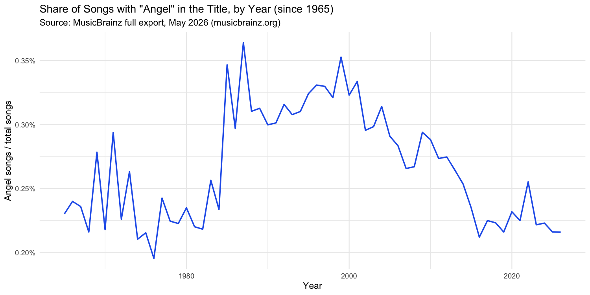
Show all charts
All songs by year
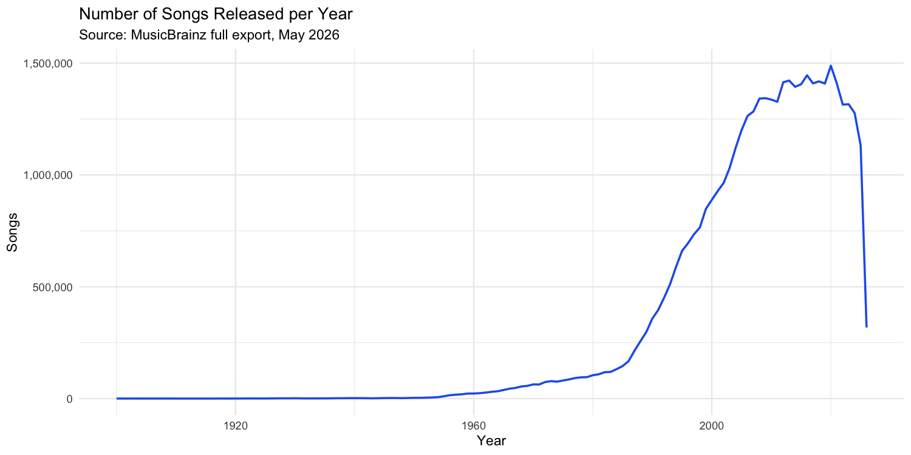
Songs with "Angel" in the title
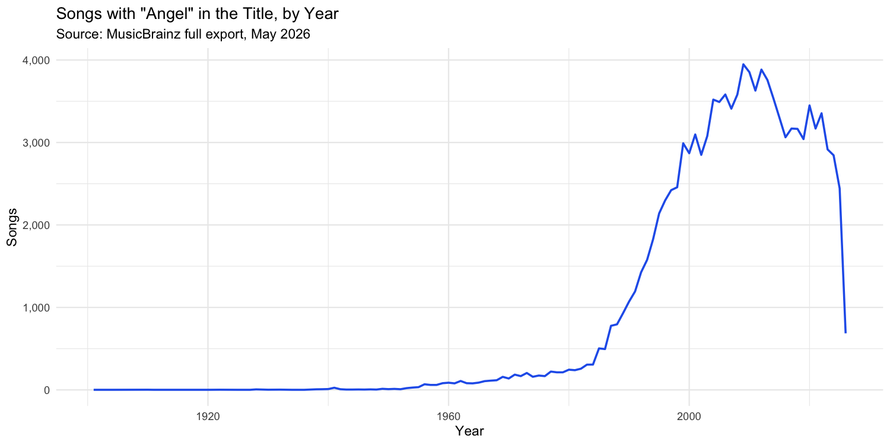
Angel songs as % of all songs (full range)
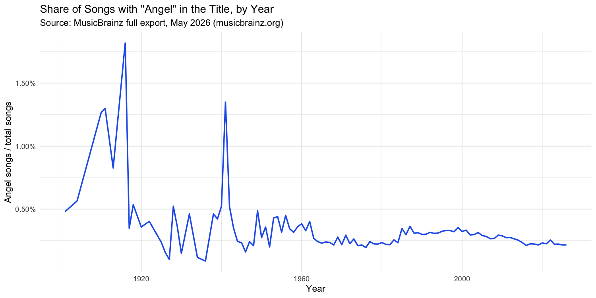
Million Song Dataset
1M contemporary popular tracks · millionsongdataset.com · ~515K tracks with year data
Angel songs as % of all songs (since 1965)
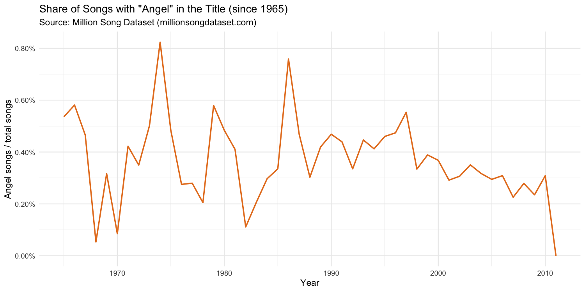
Show all charts
All songs by year
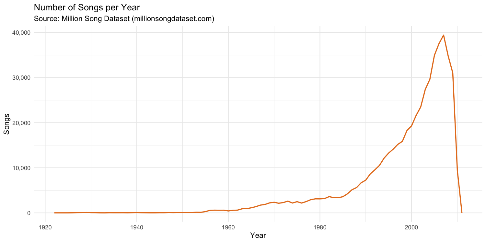
Songs with "Angel" in the title
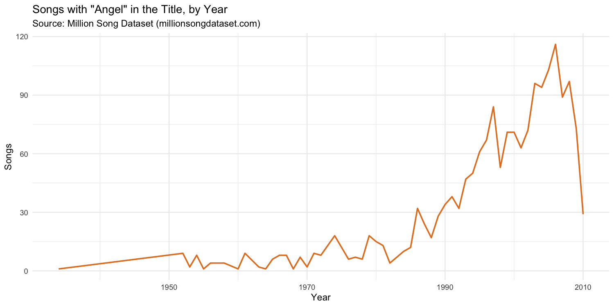
Angel songs as % of all songs (full range)
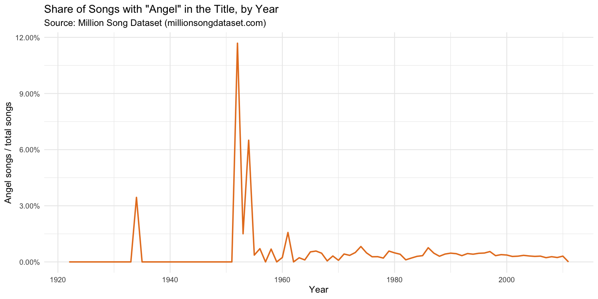
Kaggle Spotify Music Info
Spotify audio features dataset · kaggle.com · track names, years, and audio features
Angel songs as % of all songs (since 1965)
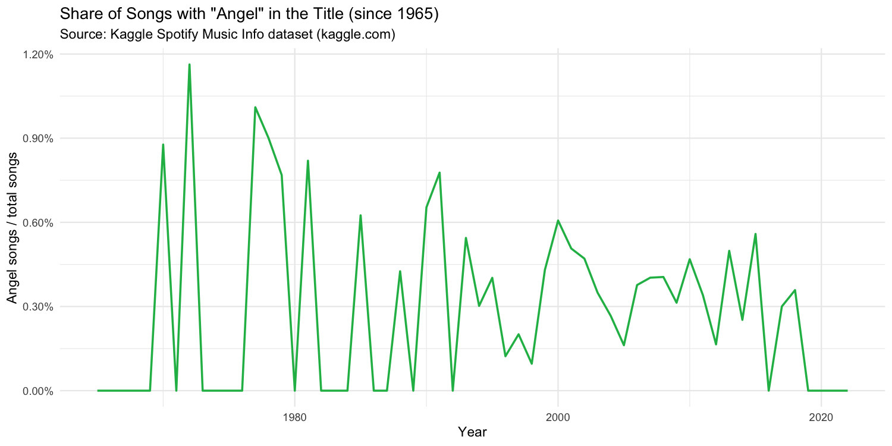
Show all charts
All songs by year
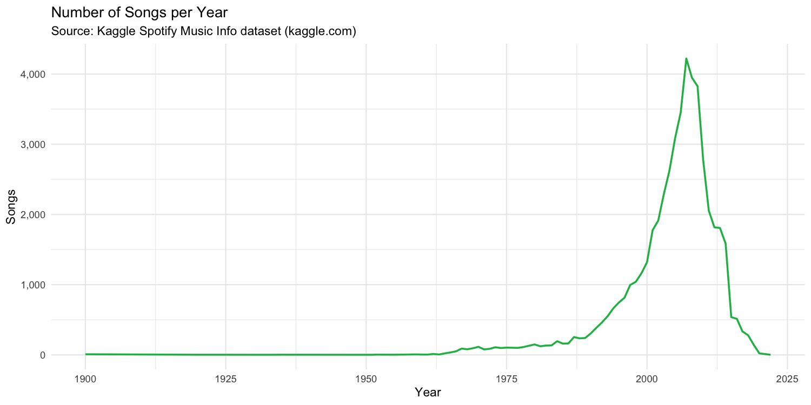
Songs with "Angel" in the title
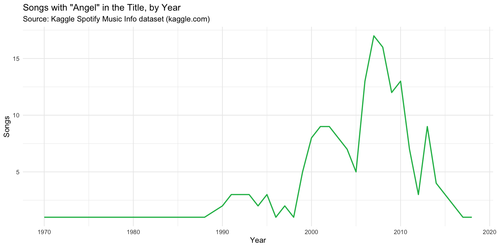
Angel songs as % of all songs (full range)
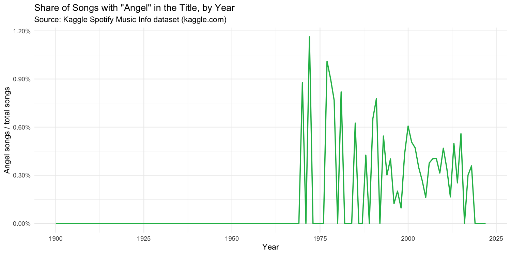
Kaggle Billboard #1 Hits
Billboard chart-toppers scraped via Genius · ~6,500 songs · 1958–present
Angel #1 songs as % of all #1 songs (since 1965)
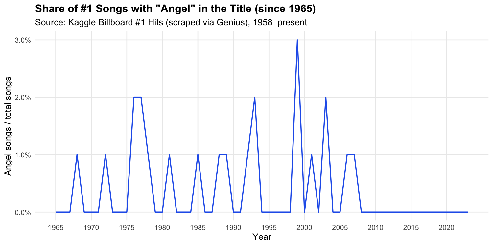
Show all charts
All #1 songs by year
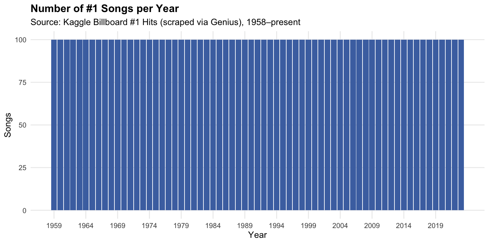
#1 songs with "Angel" in the title
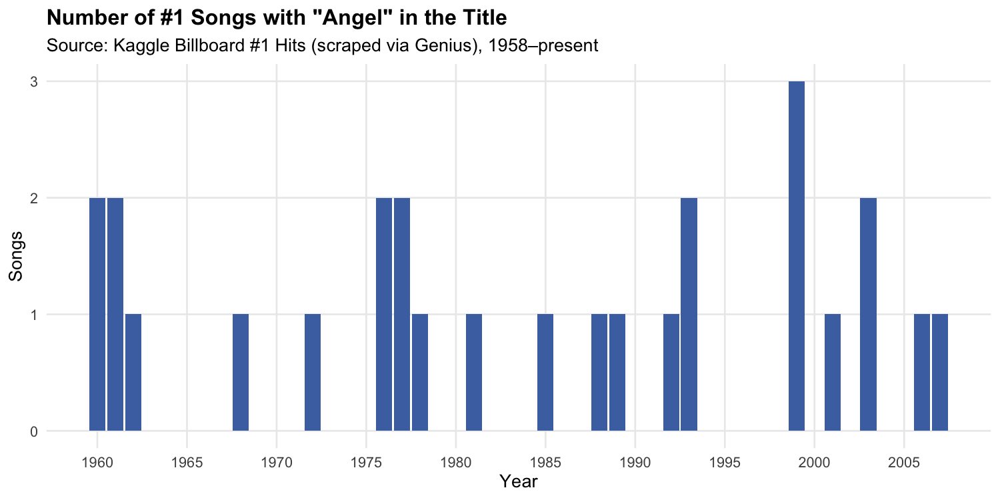
Angel #1 songs as % of all #1 songs (full range)
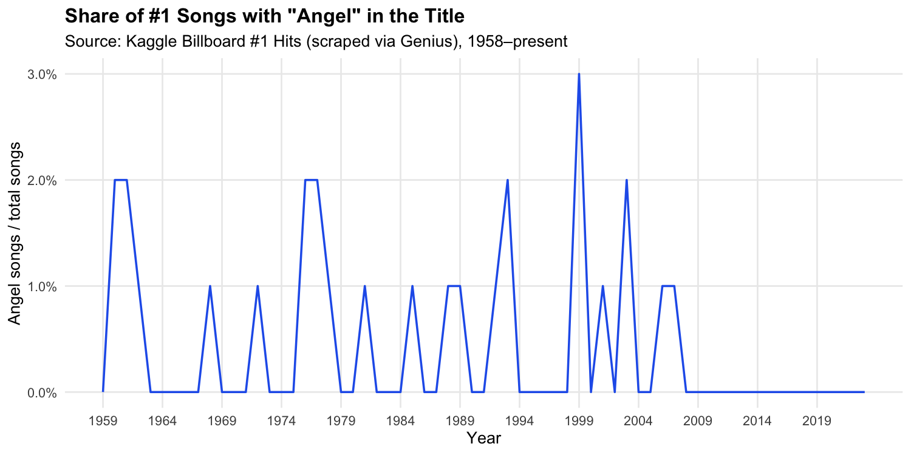